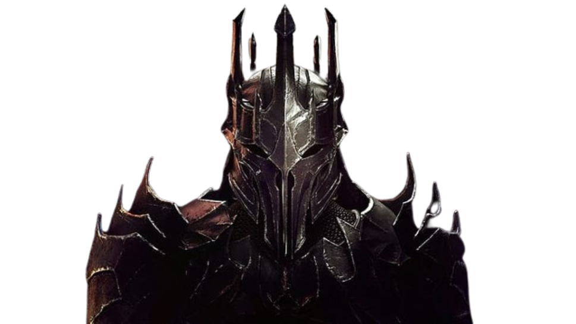
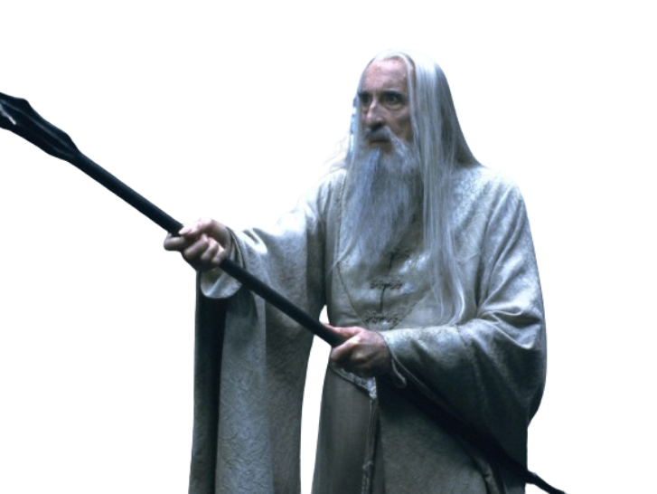

Legolas
Elfo del Bosque Negro y hábil arquero, miembro de la Comunidad del Anillo.
Ver Perfil
Gimli
Un enano guerrero y leal miembro de la Comunidad del Anillo.
Ver Perfil

Frodo
Portador del Anillo, encargado de destruir el Anillo Único en Mordor.
Ver Perfil
Sam
Leal jardinero y amigo de Frodo, lo acompaña en su misión a Mordor.
Ver Perfil
Gollum
Una criatura torturada por el Anillo Único, que guía a Frodo y Sam a Mordor.
Ver Perfil

Merry y Pipin
Dos hobbits traviesos y valientes, miembros de la Comunidad del Anillo.
Ver Perfil
Bilbo
El hobbit que encontró el Anillo Único y tío de Frodo.
Ver Perfil

Sauron
El Señor Oscuro, creador del Anillo Único y principal antagonista.
Ver Perfil

Saruman
Un mago corrompido por el poder de Sauron, busca dominar la Tierra Media.
Ver Perfil
Galadriel
Una poderosa elfa y guardiana del Bosque de Lothlórien.
Ver Perfil